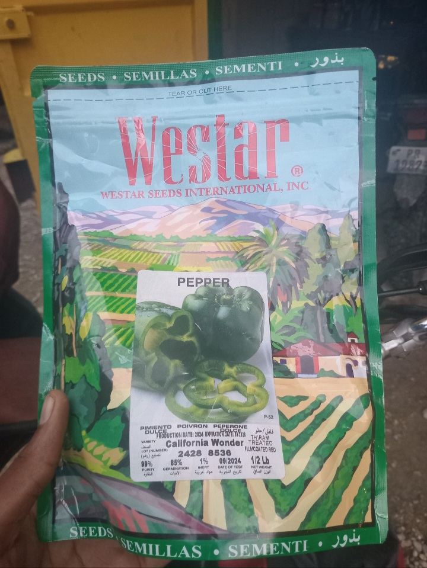

An n mobilize pou peyizan nou yo

Depatman an bezwen èd manb ki plis kapab yo.
Mwen se Agro Thomas. Chak map retounen lakay mwen, se mizè peyizan yo sèlman m rankontre sou chemen m. Se pa senp demand sèlman; se kri yon fanm kiltivatè ki oblije vin vann mwen koton pou l ka jwenn semans alèkile pou l fè jaden! Mizè sa a montre depatman an bezwen sèvis ki depase fòs yon sèl moun. Mwen poukont mwen, pa kapab reponn a tout dezas sosyal sa yo.
"Agrikilti se fondasyon devlopman. Envesti nan peyizan se envesti nan avni peyi a."
Kòman w kapab sipòte?
🏷 Nou afiche don ke w' bay lan sou platfòm piblik nou atravè foto oswa temwanyaj peyizan ki benefisye de jès ou a
Kontakte agronòm Kabé